المميزات
التطبيق بيعمل إيه بالظبط؟
التطبيق بيبدأ من جسمك وهدفك وصحتك. أي حالة صحية أو دواء بيتسجل في الأول بيغير الأكل والتمرين والمواعيد، وعلشان كده مفيش خطتين شبه بعض.
الأكل
أي أكلة، بسعراتها.
بحث بالاسم، ووصفات بتتظبط على اللي فاضل في اليوم، وتنبيه لما أكلة متكونش مناسبة لحالتك.
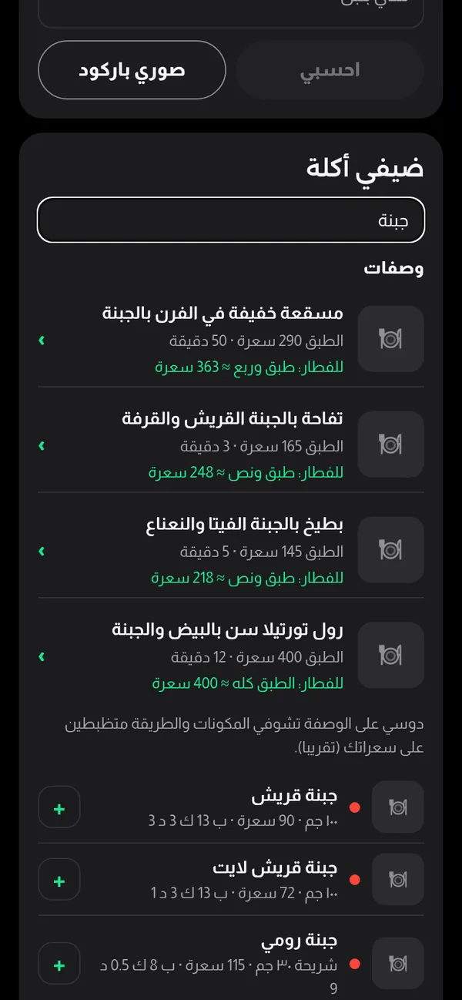
بحث بالاسم
أكتر من ٣٥٠ أكلة، كل واحدة بوزنها وسعراتها والبروتين والكارب والدهون.
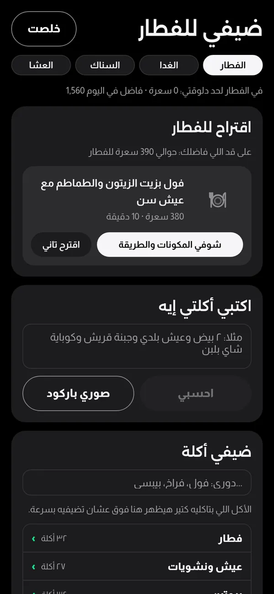
اقتراح على قد اللي فاضل
الوجبة الجاية بتتقترح على قد السعرات الباقية، مش رقم ثابت.
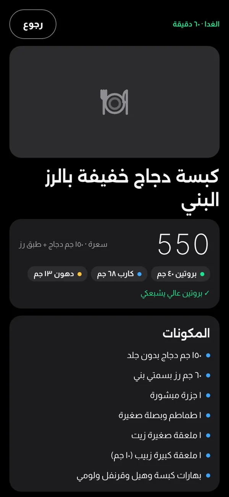
وصفات بنسخ أخف
١٥١ وصفة من المطبخ العربي، والمقادير بتتغير مع السعرات.
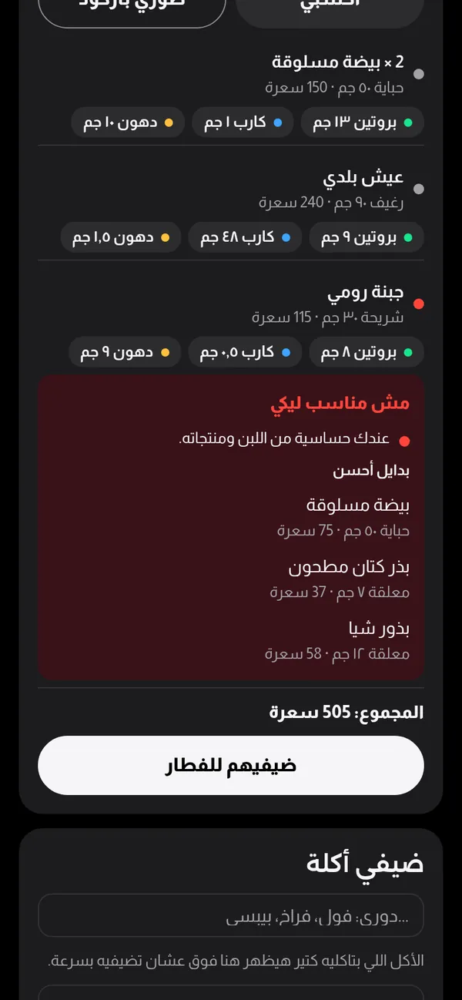
تنبيه وبدايل
لو أكلة مش مناسبة لحالتك أو فيها حساسية، بيظهر تنبيه أحمر ومعاه بدايل أخف.
حساسية الأكل
بنسأل عنها في أول مرة: مكسرات، أو لبن، أو بيض، أو سمك، أو قمح، أو أي أكل تاني بالاسم. الوصفات اللي فيها الأكل ده مش بتظهر، ولو اتسجل بيظهر تنبيه أحمر.
نظامك الخاص
لو فيه نظام أكل من دكتور أو أخصائي تغذية، أرقامه بتتسجل والتطبيق بيمشي عليها بدل حسابه هو.
قراءة الباركود للمنتجات المغلفة في تطبيق الموبايل، ولو الأكلة مش موجودة، فيه بحث في قواعد بيانات الأكل العامة.
تطبيقات التصوير بتخمن الكمية من الصورة. في اختبار لـ4 تطبيقات تصوير معروفة، الوجبة الواحدة طلعت أقل من الحقيقة بين 250 و345 سعرة (باحثين في NIH، مؤتمر NUTRITION 2026، والدراسة لسه مش منشورة في مجلة محكمة). الخبر
أنا برة البيت
الأكل برة، محسوب برضه.
المطعم بيتحدد، والوجبة الكاملة بتطلع على قد السعرات، وبتتحجز من بدري علشان باقي اليوم يتظبط عليها.
الأماكن دي بأرقام المنيو المنشورة، وباقي الأماكن سعراتها تقريبية.
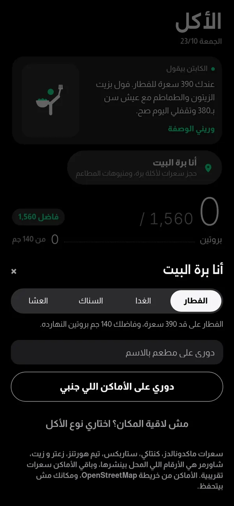
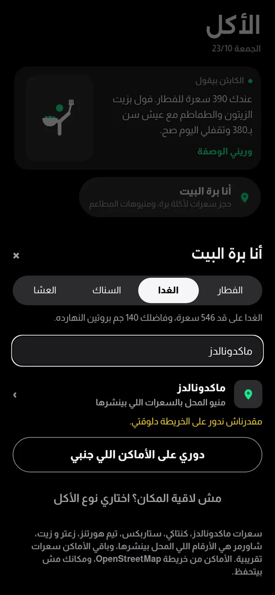
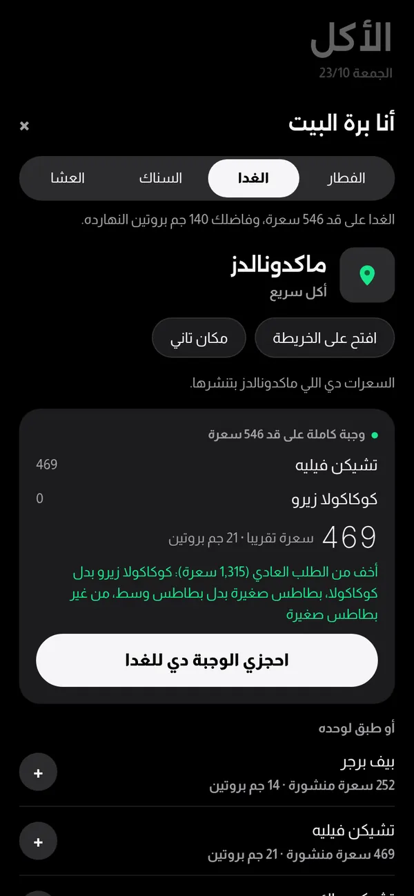
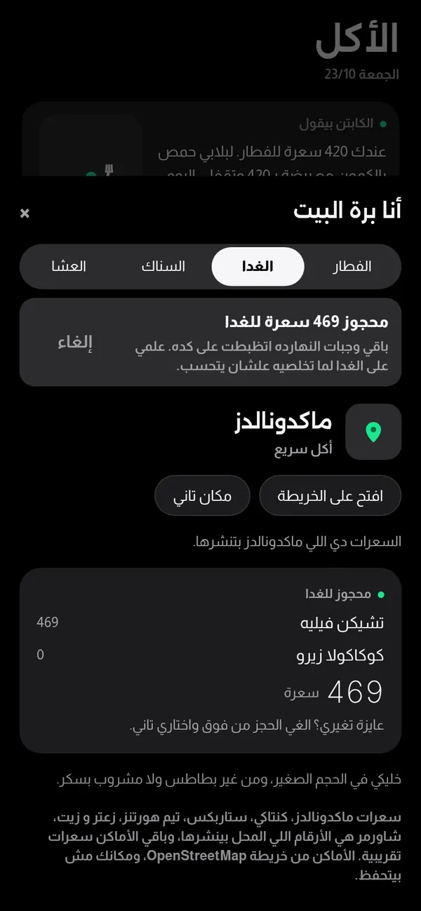
التمرين
كل يوم ليه تمرينه.
جيم أو بيت أو راحة، يوم بيوم. والجهاز لو مشغول، فيه نسخة بالأوزان الحرة لنفس التمرين.
أسبوع على مزاجك
كل يوم بيتحدد جيم أو بيت أو راحة، والتمارين بتتغير على حسبه.
عداد الراحة
بعد كل مجموعة بيبدأ لوحده، ويرن لما الراحة تخلص.
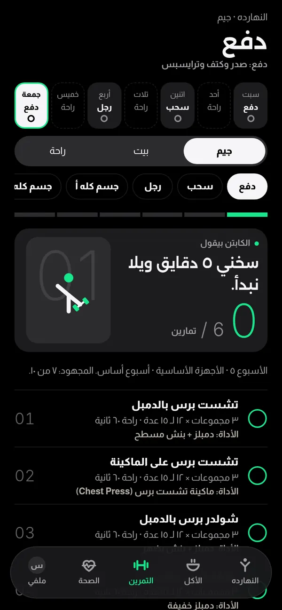
تمرين النهارده
المجموعات والعدات والراحة لكل تمرين، و٩ أنظمة من ٣ لـ٦ أيام.
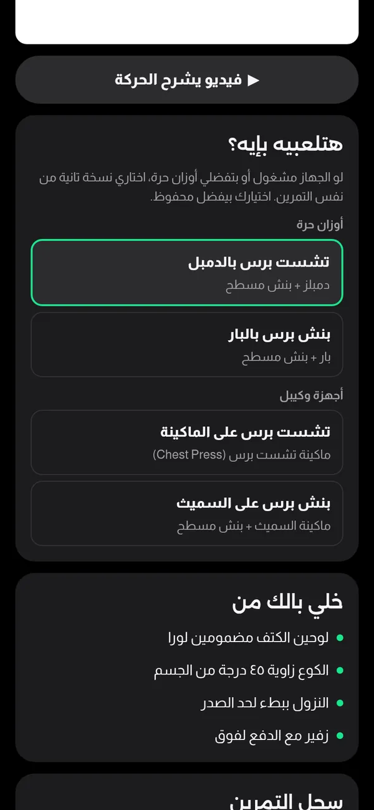
جهاز أو أوزان حرة
كل تمرين ليه نسختين، والاختيار بيفضل محفوظ للمرة الجاية.
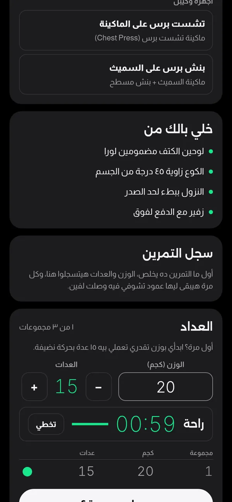
تسجيل وراحة
الوزن والعدات لكل مجموعة، وعداد الراحة بيشتغل لوحده.
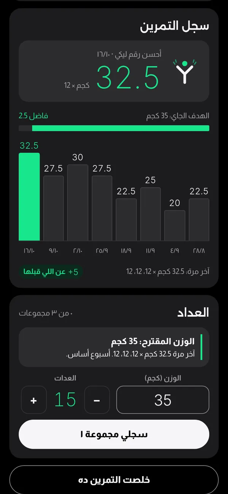
سجل الأوزان
أحسن رقم، والهدف الجاي، وعمود لكل جلسة. والوزن المقترح بيزيد لما العدات تكمل.
صحتك
الخطة عارفة حالتك.
الأدوية بمواعيدها مع الأكل، ويوم تعبان معناه تمرين أخف، والتحاليل وتقرير الدكتور جاهزين في أي وقت.
الأدوية مع الوجبات
كل دوا بجرعته وميعاده، ومكانه من الأكل: قبله أو معاه أو بعده. وتطبيق الموبايل بيفكر بيه في الميعاد.
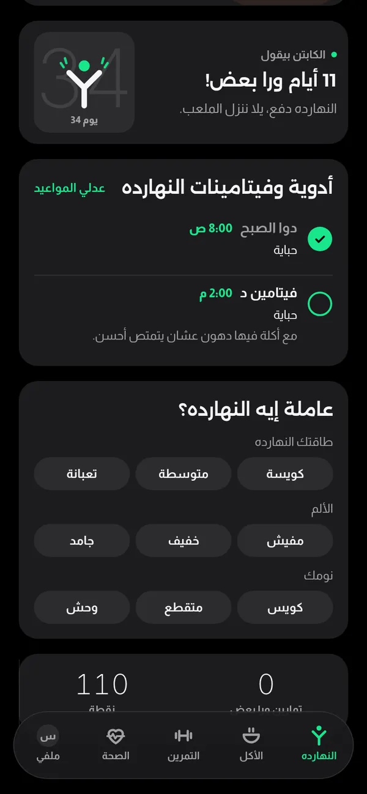
يوم صعب؟ الخطة بتخف
لو الطاقة قليلة والألم جامد والنوم وحش، تمرين النهارده بيتحول ليوم تعافي خفيف لوحده. ولو اليوم طلع كويس، بيرجع بضغطة.
التحاليل ومقارنتها
النتيجة والتاريخ، وتذكير قبل التحليل الجاي. و٨ تحاليل بتتابع، وتقرير PDF بيقارن آخر ٣ نتايج لكل تحليل.
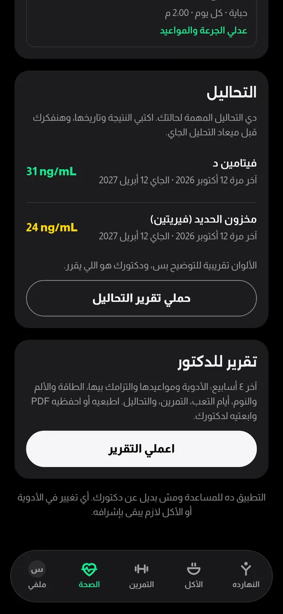
تقرير للدكتور
آخر ٤ أسابيع في ملف PDF: الالتزام بالدوا، والطاقة والألم والنوم، والأيام الصعبة، والتمرين، والتحاليل. ينفع يتطبع أو يتبعت.
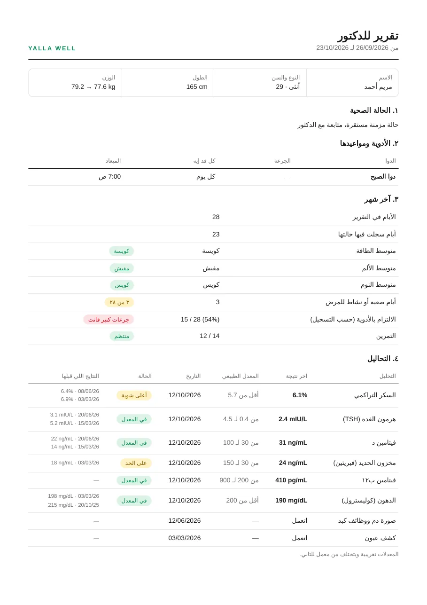
يلا ويل بيساعد في التنظيم والمتابعة، ومش بيشخص. والقرار في الدوا أو الأكل أو التمرين بيكون مع الدكتور.
للستات
الدورة والحمل، والخطة معاهم.
متابعة الدورة والحمل جوه نفس الخطة، فالتمرين والسعرات بيتغيروا على حسب اليوم والشهر.
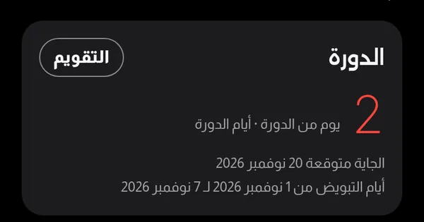
الدورة
تسجيل أول يوم بس، والتطبيق بيحسب الدورة الجاية وأيام التبويض من التواريخ اللي فاتت.
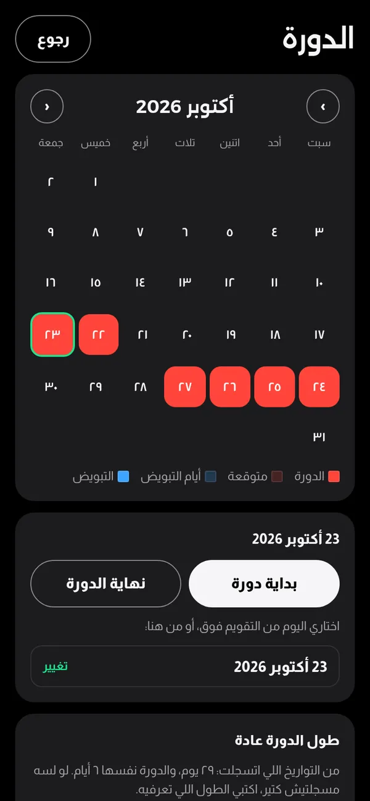
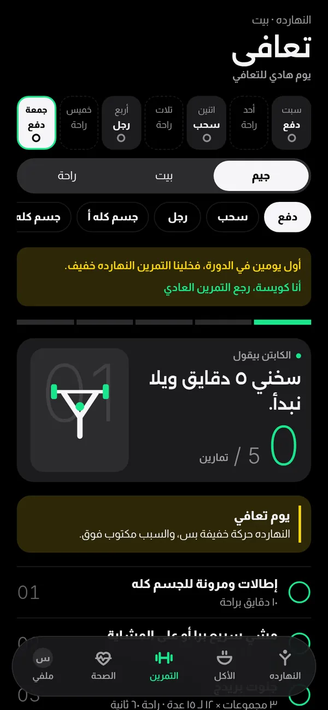
أول يومين أخف
في أول يومين من الدورة التمرين بيبقى أخف لوحده. ولو اليوم كويس، التمرين العادي بيرجع بضغطة.
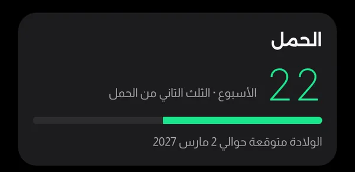
الحمل
أسبوع الحمل والثلث اللي فيه. السعرات من غير عجز، والتمارين اللي مش مناسبة بتتبدل على حسب الشهر.
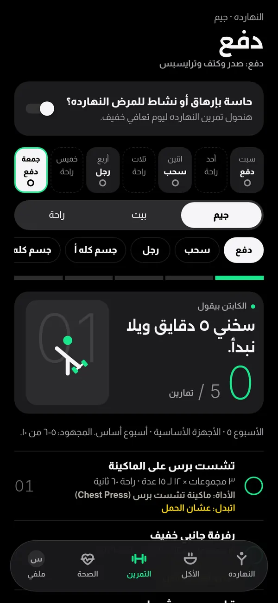
التقارير
ورق ينفع يتطبع.
تقرير للأسبوع، ومقارنة للتحاليل، وتقرير للدكتور. كل واحد ملف PDF ينفع يتبعت أو يتطبع.
درجة الأسبوع من السعرات والبروتين والمياه والتمرين، ويوم بيوم، واللي اتحقق واللي محتاج يتحسن.
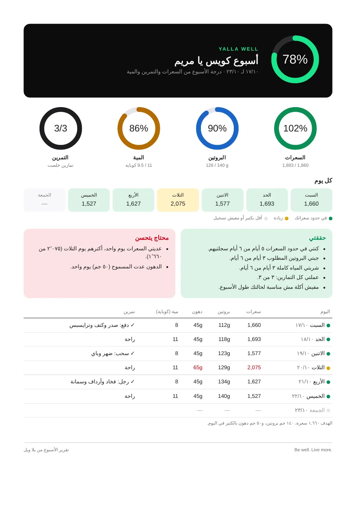
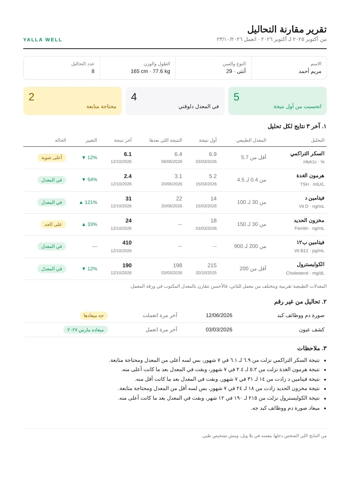
التقدم
التغيير باين بالأرقام.
الوزن لوحده مش بيحكي كل حاجة، فالتطبيق بيتابع المقاسات ونسبة الدهون كمان، وبيطلع صورة للأسبوع بأرقامه.
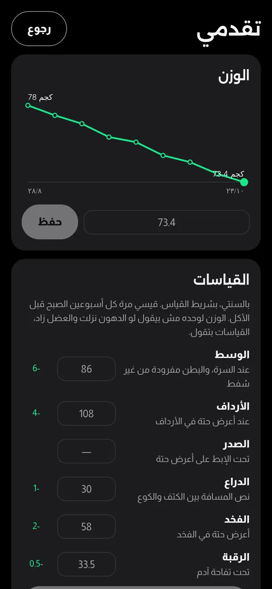
صفحة التقدم
الوزن على رسم بياني، والمقاسات بالسنتي، ونسبة الدهون التقريبية، وصور التقدم. والصور بتفضل على موبايلك.
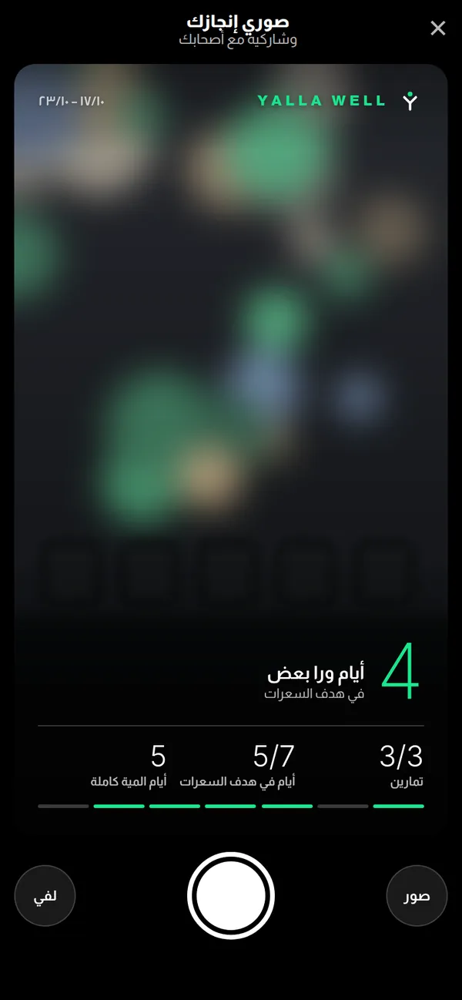
صورة الإنجاز
الكاميرا بتفتح جوه إطار فيه أرقام أسبوعك الحقيقية: الستريك والتمارين وأيام الهدف. الصورة بتتاخد وتتشارك مع الأصحاب.
الستريك
ولو يوم فات، الفريز موجود.
كل يوم في حدود السعرات بيزود الستريك. وكل ٧ أيام ورا بعض بيضيفوا فريز، ولو يوم فات، الفريز بيغطيه والستريك يفضل شغال.
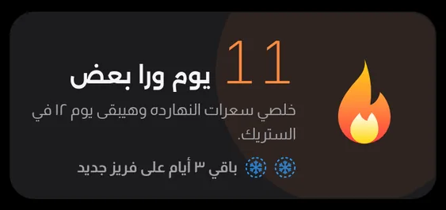
النقط بتتجمع كل يوم، وبتظهر في صورة الأسبوع.
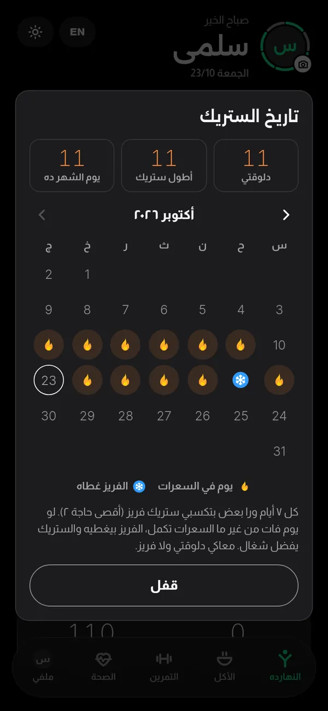
الكابتن
جملة في وقتها.
الكابتن عارف ساعة كام، وفاضل كام سعرة، والنهارده تمرين ولا راحة. فالكلام بيتغير مع اليوم.
صباح الفل! فطار فيه بروتين، ويومك يبدأ صح.
أول ما التطبيق يفتح، ومعاها اقتراح فطار على قد السعرات.
تسخين ٥ دقايق ويلا نبدأ. النهارده دفع، ٦ تمارين.
في صفحة التمرين، ونص التمرين بيقول "فاضل ٣ تمارين".
محجوز ٤٦٩ سعرة للغدا برة. باقي اليوم متظبط عليهم.
بعد حجز وجبة من "أنا برة البيت"، والوجبات التانية بتخف.
مش مشكلة، تمشية ٢٠ دقيقة وبكرة نظبطها.
لما سؤال الصبح يقول إن الطاقة قليلة، التمرين بيبقى يوم تعافي.
الوجبات خلصت، وفاضل ٢٨٠ سعرة لو الجوع جه.
والساعة ١٢ اليوم بيتقفل ويدخل في تقرير الأسبوع.
ومعاك على الموبايل طول اليوم.
الكابتن بيبعت تنبيهات بأرقام يومك: فاضل كام كوباية مية، وكام سعرة، وميعاد الدوا، وتمرين النهارده، ولو الأكل لسه متسجلش. ولو الحاجة اتعملت، التنبيه بتاعها مش بيوصل.
التنبيهات في تطبيق الموبايل بس.
- يوم النهارده9:45
مفيش أكل متسجل النهارده
- تمرين النهارده7:30
تمرين النهارده في البيت، ٦ تمارين
- الغدا4:00
فاضلك ٧٢٠ سعرة، يعني غدا مريح من غير قلق
- ميعاد الدوا2:00
قرص واحد. مع الأكل أو بعده
- المية1:30
فاضلك ٣ كوبايات مية النهارده
Be well. Live more.
يلا نبدأ.
التطبيق جاي قريب على آيفون وأندرويد.